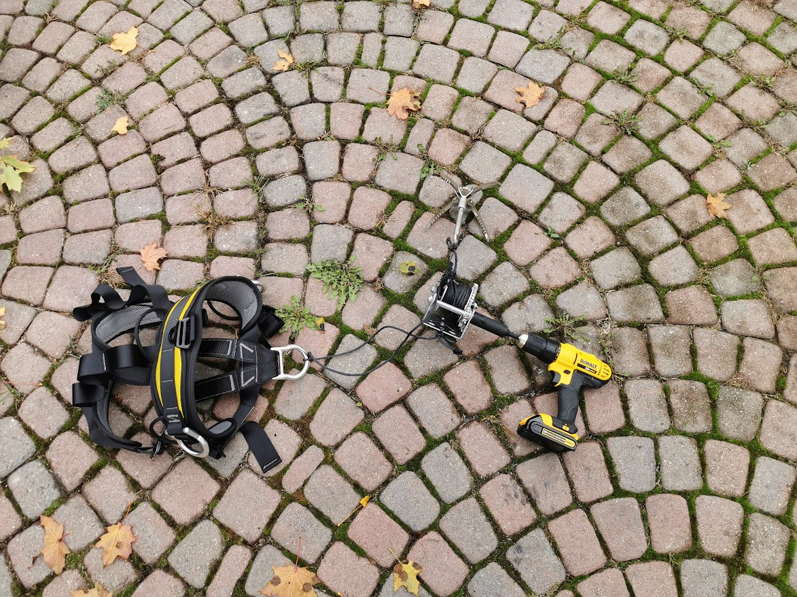
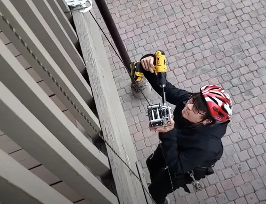

THE GRAPPLING HOOK MARK 2

Introduction
The Grappling Hook Mark I was an inefficient piece of work. My goal was to make something lighter while retaining similar functionality. The incremental improvements that I continually added to the concept of this new device became so plentiful that it became a brand new hook: The Grappling Hook Mark II.
A New Hook
One of the largest issues with the first grappling hook was with hook retrieval. Once I made it up something, how would I get down while taking the hook with me? Once the hook is set, it would be nearly impossible to unhook. I had to find a better hook that I could use for descent.
Some research found me a special hook called a "gravity hook" which would close as tension is applied to it but open up when tension is released. By pulling on the string that's attached to the hook, it would close as I descend with my body weight and it would open as I touch the ground and the weight is released. This solves the issue with hook retrieval.
The Ascension Mechanism
However, because I can't bring a 60-pound contraption to the top of a building, I required something much lighter. I wanted to make a compact autobelaying device, similar to the ones rock climbing gyms had, but they were far too complicated. I also considered a grigri (a tool rock climbers used) but it was incompatible with the 3.5mm 1800 pound kevlar rope I was using.
I eventually settled on using a crank winch which I would tie myself to and my plan was to just crank my way down a building. But then I thought further. Because I’m going down, is there something that could spin the winch faster than my hand? A cordless drill, of course! I then planned to use a drill to drive the axle of the winch (which gave me a lot of headaches down the line) which would allow a high-speed AND safe descent. Not only was that lighter than the first grappling hook, it was also a lot more modular.
And I went EVEN further. What if, because I’m using a drill, I could use it to ascend too? I did some quick calculations below and realized that it was in fact feasible, in terms of both battery and torque.
The Math
Note: I had to make quite a few assumptions. Also, most cordless drills are capable of outputting over 15nm of torque. I lowered the torque requirement further using a winch.
The First Winch
The first winch had a gear ratio of 3.1:1 and weighed 4 pounds but there was a crucial issue: The ratcheting system only allowed for the rope to move in one direction. In order to reverse the direction, I would either have to release the ratcheting system and risk falling to my death or I would have to unspool the entire rope and respool it again the other way. Neither of them were viable solutions.
In addition to the issue with the ratcheting, there was also an issue with driving the winch using the drill. It was driven using a 3/4" female hex adapter onto a 3/4" lock nut. But given the amount of torque involved, the lock nut would frequently fall out rendering me stuck in place. I even tried gorilla gluing the nut in place (as pictured above) to no avail.
The Second Winch
I had no choice but to buy a second winch to engineer a viable ascension mechanism. This one was different in the way that it auto-locked due to the use of a worm gear, which eliminated the need for a ratchet. In addition, it was designed to be driven by drills so I could drive the axle directly without needing to worry about anything falling off. Unfortunately, it weighed a whopping 10 pounds and the gear ratio was 30:1 which slowed the speed of ascent. Worm gears are also inefficient and release a lot of energy in the form of heat generated from friction.
The Result
I shot a test video showing the ascension mechanism. Unfortunately, because horizontal bars are rarer than I'd like and I don't want to film myself trespassing, I could only film a video showcasing the winch in action. I used carabiners to clip the harness into the winch and also to clip my second hook onto the harness.
The Conclusion
The entire project took over a month of work, a lot of money, and an embarrassingly high number of trips to Home Depot. However, I succeeded in the end by creating a winch that I could actually take with me as I ascended. From the previous winch, I doubled the rate of ascent from around 3cm/s to 6cm/s while lowering the weight of the entire setup to around 16 pounds from 60 pounds. Overall, a huge win.
The Parts List
If you want to build this hook for yourself, I've included a parts list here. Everything is bought in the area where I lived, but feel free to substitute similar parts. I am not liable for any injuries or deaths this may cause.
Happy building!